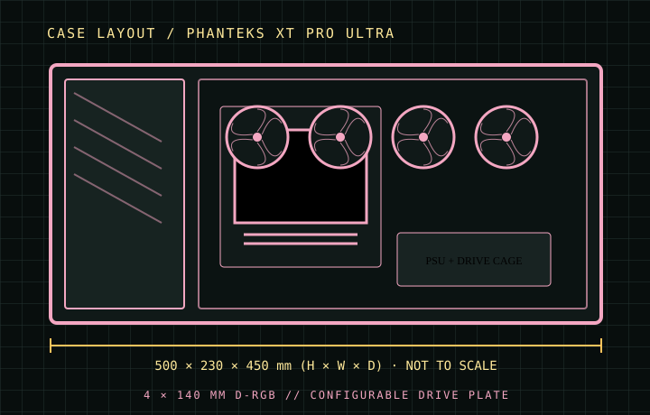

[ CASES // IDENTIFIED CHASSIS ]
Phanteks XT Pro Ultra
The XT Pro Ultra is a mesh-front tower sold with four 140 mm D-RGB fans, giving it an unusually substantial out-of-box airflow package. The model’s E-ATX allowance is width-limited, and its storage plate is configurable: drive counts depend on whether 2.5-inch or 3.5-inch positions are prioritized.

MODEL SCOPE: Specifications describe the named enclosure generation, not every visually similar case or retail bundle. Published maximums are component-envelope limits; verify the exact SKU, installed fans/radiators, connectors, and manufacturer manual before purchase or assembly.
Dimensions & compatibility
| Cataloged model | Phanteks XT Pro Ultra |
|---|---|
| Generation / class | 2024 · E-ATX airflow mid-tower |
| External dimensions | 500 × 230 × 450 mm (H × W × D) |
| Motherboard fit | Mini-ITX, Micro-ATX, ATX and E-ATX up to 280 mm wide. |
| Drive compatibility | Selectable plate layouts: up to 5×2.5-inch + 1×3.5-inch, or 3×2.5-inch + 2×3.5-inch. |
| Graphics card | Up to 415 mm long; thickness/width also depends on installed side fans and the chosen board. |
| CPU air cooler | Up to 184 mm tower height. |
| Power supply | Up to 270 mm. |
| Fans and radiators | Four 140 mm D-RGB fans supplied in the Ultra package. Roof supports up to 3×120 mm and up to 360 mm radiator; front supports up to 2×120 mm / 240 mm radiator; rear supports 120/140 mm fan and 120 mm radiator. Side/midplate fan positions add airflow but are not a 360 mm radiator position. |
Fit notes for this layout
The XT Pro Ultra label identifies the four-fan version; the XT Pro base case and other regional bundles do not necessarily include the same lighting hardware. Published storage totals are mutually exclusive plate configurations, not a simultaneous maximum.
- The front radiator envelope tops out at 240 mm while the roof supports 360 mm; do not infer radiator support from fan capacity alone.
- Keep the E-ATX board within the 280 mm width limit to avoid blocking cable pass-throughs and side-fan mounting.
- Select the storage bracket arrangement before assembly: five 2.5-inch positions and two 3.5-inch positions cannot all be counted together.
Source record
- Phanteks — XT Pro Ultra product specificationsManufacturer dimensions, drive layout and radiator/fan support.
- Basic Tutorials — Phanteks XT Pro Ultra reviewIndependent model review and enclosure fit observations.
- ComponentScale — Phanteks XT Pro Ultra specificationsIndependent component-clearance and storage summary.
Case specifications are manufacturer-rated maximums unless stated otherwise. Component shape, mounting hardware and assembly order can reduce practical clearance; consult the exact revision manual when dimensions are critical.